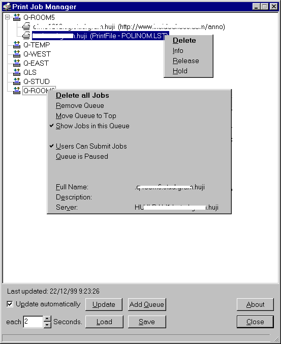

Print Job Manager

This picture is syntethic to
show both context menus. I also garbled the network names to keep
the privacy of the Hebrew University and it's users.
I wrote two versions of this tool:
- Version 1.5 uses the Novell
ActiveX Controls. This version has some more features (like
nicer graphics, hold/resume queues, change priority of
jobs in a queue) but needs the NWPQA.OCX ActiveX control
installed on your computer.
- Version 1.4 does not need
any additional files (it uses the Novell API directly),
but has no graphics and can't hold/resume queues or
change the priority of jobs in a queue. Furthermore this
version does not read certain print queues on 4.10
servers or other queues (Novell's API is really messy
regarding queues). The only option v 1.4 has in addition
to v 1.5 is that it shows you wether you are Queue
Operator.Note: It seems that this version does not
work well with Novell 5.1 servers. Use the ActiveX
version instead.
Both versions offer the same basic functionality:
- Hold and Resume Print Jobs
- Delete single Jobs or all Jobs in a Queue
- Load/Save the configuration
- Special Kiosk mode where the Load, Save and Add Queue
buttons are disabled (this is for class admins who
shouldn't get confused by too many options).
Downloads:
Print Job
Manager v 1.5
In addition you need either Novell ActiveX controls with Installer (Release
3) (5 MB)
or the Novell
Print Queue Administration Control v 1.4 (NWPQA.OCX, 206 K) and install it manually (see below).
These are the versions of the ActiveX that I used for
development, you might check on www.novell.com for newer versions.
Print Job
Manager v 1.4 (no
additional files needed)
Manual installation of the ActiveX control:
1. Download the NWPQA.OCX file to your system (or system32)
directory (e.g. C:\WINDOWS\SYSTEM or C:\WINNT\SYSTEM32)
2. Open a DOS prompt in the directory where you put it and run
the command REGSVR32 NWPQA.OCX
.(REGSVR32 should be on your system, in case it is not you can
try this one, it is from my NT4). This
will register the OCX with your Windows system.
3. Copy the PJM.EXE you downloaded above to any location and
run it.
Send feedback, comments, ideas, whatever you want to tell me
to Schlomo Schapiro
Copyright
& Disclaimer ©, 1999, The Hebrew University of
Jerusalem. All Rights Reserved.